Biomedical Engineering · Boston University · Class of 2029
Thana (Kenny) Teeraphantuvat
I work with materials and light: biocomposites, gold nanorods and optical sensors. Now I’m pointing that at devices worn on the body.
205
Citations
4
h-index
5
Papers
2
First-author
In progress · Fall 2026
Wearable ECG + PPG band for pulse arrival time
My grandmother’s stroke is why I care about monitoring. After a stroke, heart rhythm and blood pressure get checked constantly, and both leave signals at the skin. This band records an electrical signal (ECG) and an optical one (PPG) at the same time. The delay between them, the pulse arrival time, tracks how fast the pressure wave travels, which is one route to cuff-less blood-pressure estimates.
The goal is a validated measurement, not a gadget. Heart rate from the band is compared against a commercial watch using Bland–Altman agreement analysis.
SoftwareFirmware and a Python live-plot logger written
AnalysisBand-pass filtering, R-peak and pulse-foot detection, PAT, HRV (RMSSD)
NextBreadboard build, rest and post-exercise sessions, agreement vs. watch
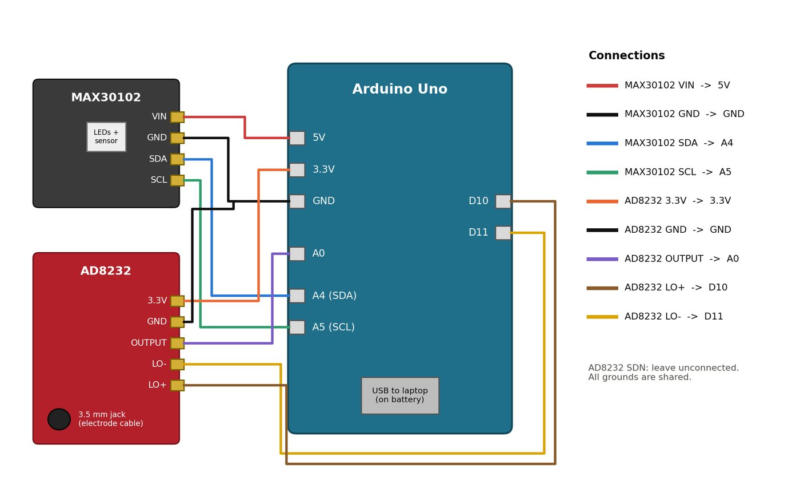
▸ 01
Planned wiring. Photos of the real build replace this once it’s on the bench.
Schematic, not recorded data. Real traces go here after the first session.
Selected work
Materials → devices
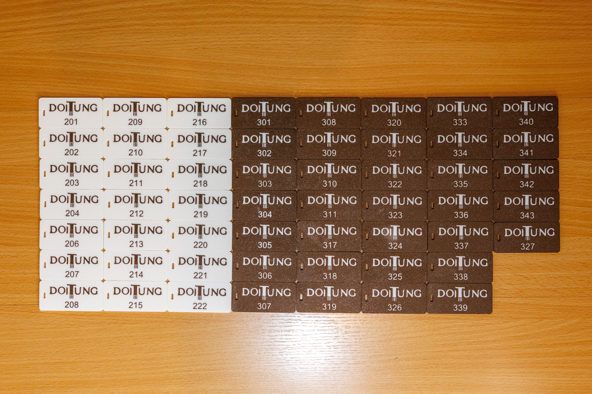
▸ 02
Biocomposites · Chulalongkorn University
Macadamia-shell composite filament, from farm waste to hotel key fobs
I optimized the ratio of macadamia shell powder to PLA to get a composite filament that extrudes and prints reliably, running compounding, extrusion and SEM characterization with a postdoctoral researcher and professor.
We used the filament to make the hotel room key fobs for the Doi Tung Development Project, a social enterprise under the Mae Fah Luang Foundation, printed from their own macadamia shell waste. The fobs are in daily use by guests, closing the loop from agricultural byproduct to finished product.
Materials Researcher · May 2024 – Mar 2025, Jun 2026 – present
CompoundingFilament extrusionSEMFDM printing
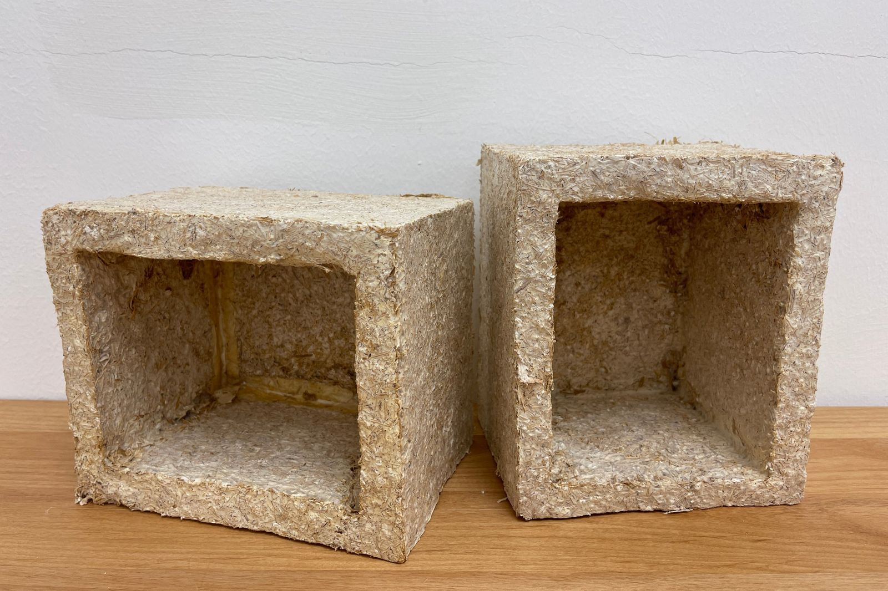
▸ 03
Biomaterials · Chiang Mai University
Mycelium biocomposites to replace polystyrene
Developed biodegradable fungal mycelium composites as a replacement for expanded polystyrene packaging, covering fungal culture, substrate prep, growth cycles and mechanical testing. I screened fungal species against agro-industrial waste substrates and linked each formulation to its compressive and flexural strength.
May 2023 – Mar 2025 · team of 5 postdocs · 4 journal articles and 1 conference paper, 2 as first author · ICAN Gold Medal and Best Young Inventor Award
Gold nanorods for photoacoustic retinal stimulation
I synthesize and surface-modify gold nanorods (PEGylation, chitosan coating), tuning their plasmon resonance near 1030 nm for photoacoustic stimulation of retinal tissue. I characterize them with UV-Vis spectroscopy and oscilloscope-based photoacoustic measurement, and log batch conditions to make synthesis more reproducible.
Pictured: UV-Vis spectrum of one batch. The longitudinal peak lands at 1041 nm, 11 nm from the 1030 nm target.
Undergraduate Researcher · Oct 2025 – present
Nanorod synthesisPEGylationUV-VisPhotoacoustics
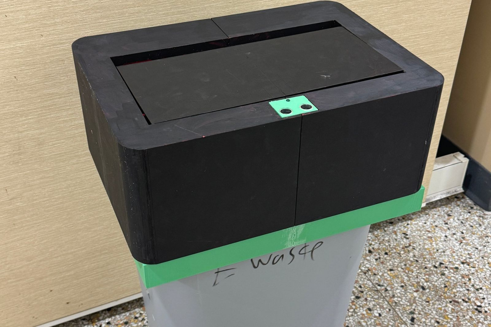
▸ 05
Embedded · EK 210
Touchless waste bin
A hands-free bin: an HC-SR04 ultrasonic sensor spots a hand within 50 cm, and a 35 kg·cm waterproof servo swings the lid open, holds it for 5 seconds, then closes it. I owned the CAD model and the servo mount in Onshape, and tuned the distance threshold and debounce timing to stop false triggers.
EK 210 Intro to Engineering Design · May – Jun 2026 · with Guy Margalit and Mohammed Sunbul
Onshape3D printingArduinoUltrasonic sensingServo
Design details
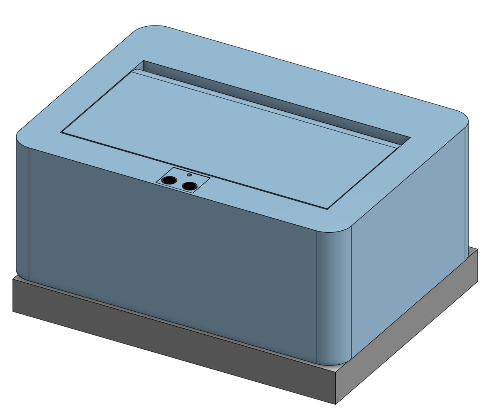
Lid assembly in Onshape
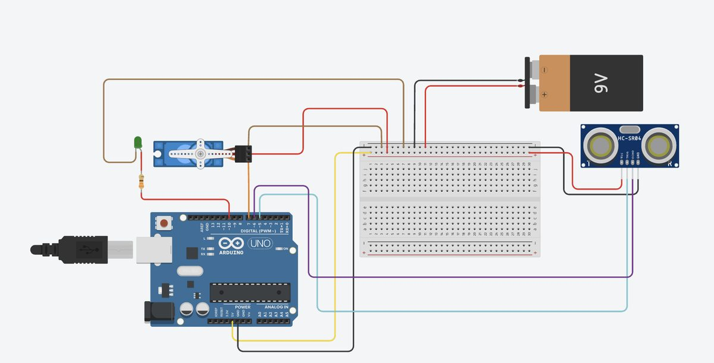
Circuit diagram
Trigger distance
< 50 cm, average of 3 readings
Lid cycle
Open 5 s, then 3 s cooldown
Actuator
DS3235 digital servo, 35 kg·cm, waterproof
Power
8× AA pack, ≈ 42 h estimated at 60 mA idle
Bill of materials
$105.27 (target under $200)
Chose sensor, actuator and power from a function–means chart, then ranked goals with a pairwise comparison. No-touch hygiene came first, cost last.
Wiring soldered and heat-shrunk, routed through channels designed into the printed housing.
Next steps from our evaluation: rechargeable pack, better splash-proofing, long-run cycle testing.
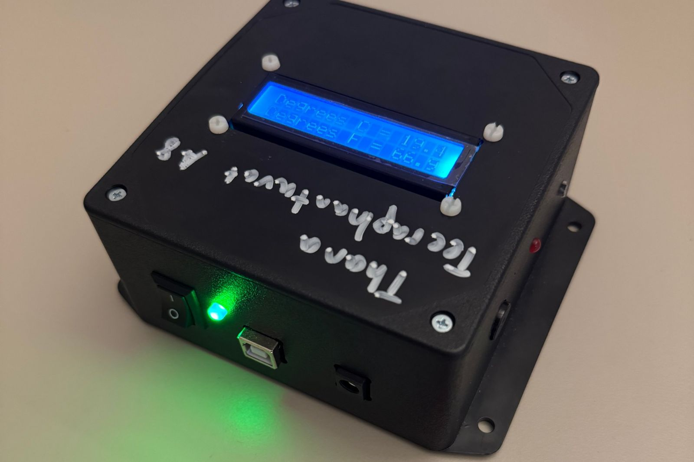
▸ 06
Embedded · EK 131
Room-temperature monitor
I built this to watch the temperature where I store my film. A TMP36 sensor feeds an Arduino Uno, which shows °C and °F on an I2C LCD. If the room leaves 70–80 °F, a red LED flashes and a buzzer sounds. It runs from a 9 V battery in a holder I designed in Onshape and 3D-printed, or from USB.
EK 131 · Boston University · solo build
ArduinoSolderingOnshape3D printing
Design details
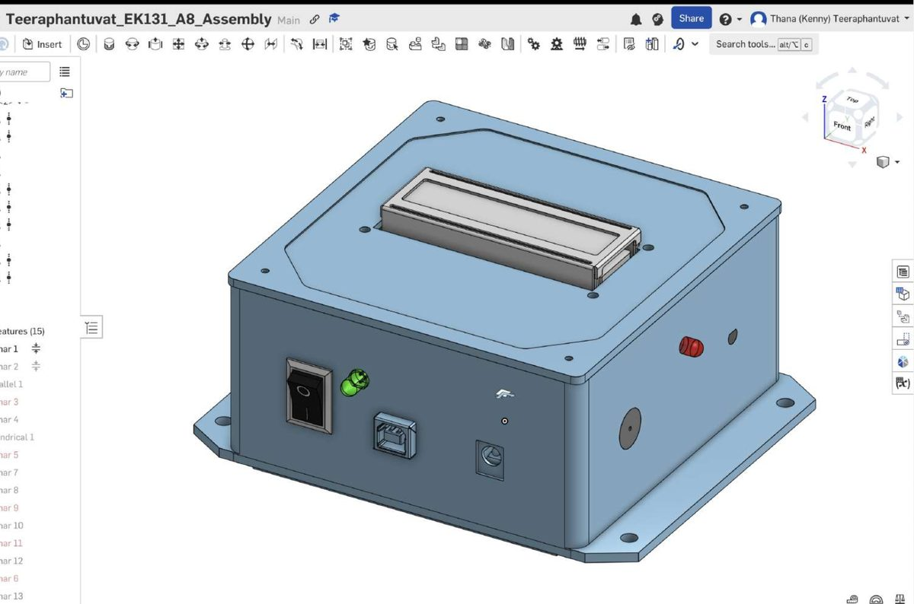
Enclosure assembly in Onshape
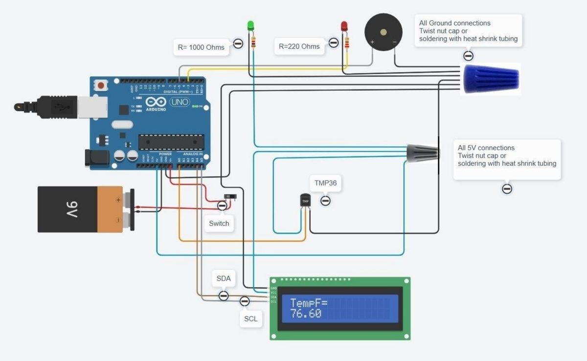
Wiring diagram
Sensor
TMP36, −40 to 125 °C
Alarm band
Outside 70–80 °F: red LED and 1 kHz buzzer
LED currents
Red 13.6 mA (220 Ω) · green 3 mA (1 kΩ)
Power
9 V battery, 80 mA draw, ≈ 6 h runtime
Measured every part with calipers and drew dimensioned sketches before laying out the box.
Prototyped on a breadboard, then soldered 22 AWG solid-core wire with heat shrink, wire nuts for shared 5 V and ground, and spade connectors to the switch.
Sized the LED resistors with KVL: the red alarm LED gets the smaller resistor so it is brighter.
Builds & repairs
Hands-on, outside class
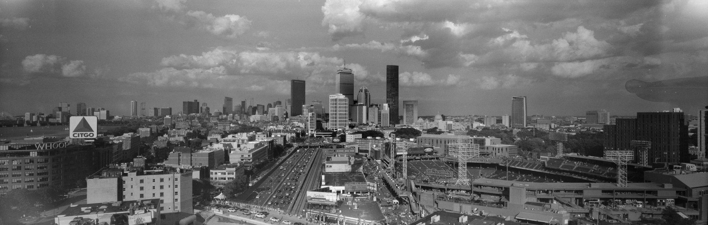
▸ 6×17
Boston from Fenway, shot on the 6×17 camera below. One frame of 120 film, about three times wider than it is tall.
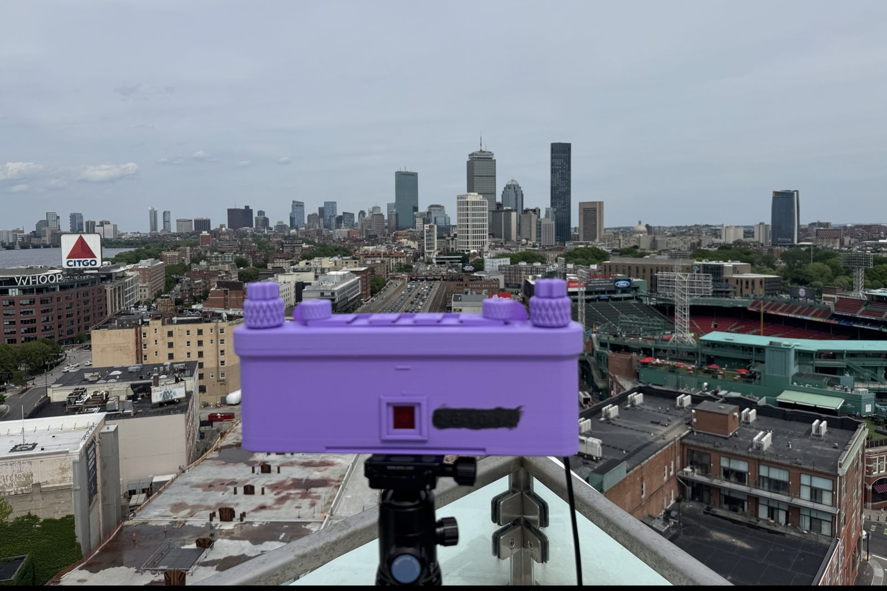
▸ 08
Optics · 3D printing
6×17 panoramic film camera
I started from an open-source 3D-printed 6×17 camera and redesigned the lens cone so it would take a Schneider Super Angulon 90mm f/8. Getting sharp, clean frames meant iterating across print revisions until the flange distance put the image right on the film plane and the body was light-tight.
Personal build · 2026
CADFDM printingTolerancingOptics
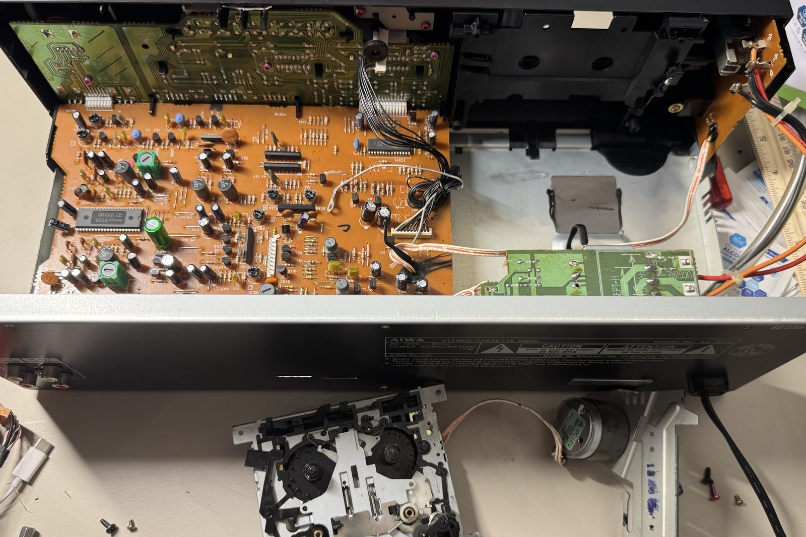
▸ 09
Electromechanical · Repair
AIWA AD-S37 cassette deck restoration
A 1990s deck with Dolby B/C and HX Pro that would no longer play. The rubber drive belts had degraded and broken. I took apart the tape transport, removed the capstan motor and flywheel, cleaned the melted rubber residue from the pulleys and capstan, routed new belts along the motor–flywheel–reel path, and put it all back together. It plays again.
Personal repair · 2026
DisassemblyBelt driveMechanism repair
Repair photos
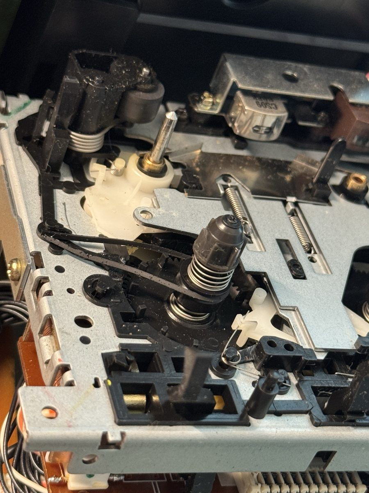
Old belts, stretched and sticky
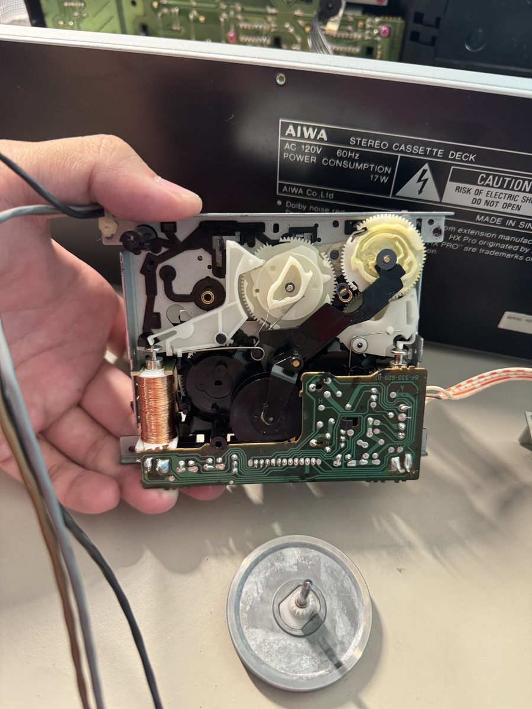
Transport out, flywheel removed
Also Replaced the light seals on a Nikon F2 and a Mamiya RB67 film back.
Publications
Google Scholar · 205 citations
2026
Fungi with function: transforming mycelium-based biocomposites into eco-friendly egg packaging
Aiduang, W., Teeraphantuvat, T., et al. · Bioresource Technology Reports, 35, 102965
1cited
2025
Sustainability initiatives in the wood processing industry: utilizing sawdust in the production of mycelium-based biocompositesFirst author
Teeraphantuvat, T., et al. · Int. J. of Environmental and Rural Development, 15(2), 47–54 · Conference paper, 15th ICERD (Excellent Paper and Excellent Poster)
1cited
2024
Improving the physical and mechanical properties of mycelium-based green composites using paper wasteFirst author
Teeraphantuvat, T., et al. · Polymers, 16(2), 262
65cited
2024
Sustainable innovation: fabrication and characterization of mycelium-based green composites for modern interior materials
Aiduang, W., Teeraphantuvat, T., et al. · Polymers, 16(4), 550
74cited
2024
A review delving into the factors influencing mycelium-based green composites (MBCs) production and their properties
Aiduang, W., Teeraphantuvat, T., et al. · Biomimetics, 9(6), 337
59cited
About
Bangkok · Singapore · Massachusetts
I’m a biomedical engineering student at Boston University with an intended minor in Materials Science & Engineering. I’m from Bangkok, and I’ve spent most of the last eight years studying abroad in Singapore and the US.
My research started with materials: turning agricultural waste into composites people can use, then making gold nanoparticles that respond to near-infrared light. Wearable biosensing is where those two threads meet. A sensor on the skin is a materials problem and an optics problem at once.
Where I want to go: devices that work with the body. That means wearable sensors, assistive exoskeletons that help people walk and climb further, and new ways of making things, like footwear sprayed directly into shape.
Outside the lab I shoot film, run distance and hike. My photography lives at kennytt.myportfolio.com.
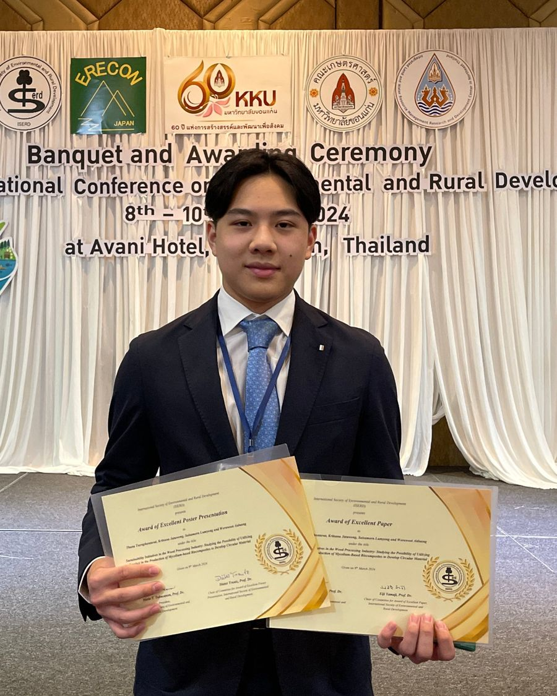
▸ 10
Excellent Paper and Excellent Poster, 15th ICERD, Thailand, March 2024
Study
B.S. Biomedical Engineering, Boston University, May 2029
Lab
Gold nanorod synthesis, PEGylation, fungal culture, UV-Vis, SEM, photoacoustic and mechanical testing, experimental design
Design
Fusion 360, Onshape, FDM 3D printing, filament extrusion
Computing
Python, Arduino / embedded C, data analysis, technical writing
Awards
ICAN Gold Medal and Best Young Inventor Award (2024) · ICERD Excellent Paper and Excellent Poster (2024) · Conrad Challenge finalist (2024)
Leadership
Founder and president, 3D Printing Club, Northfield Mount Hermon (2023–2025). Taught Fusion 360 to 10 members.